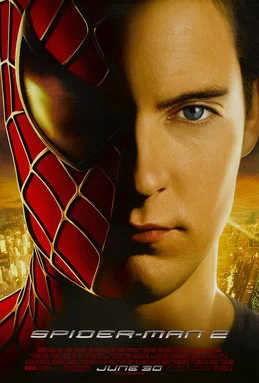
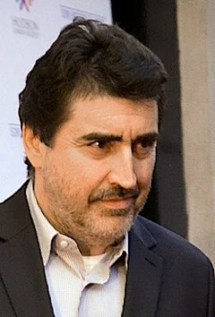
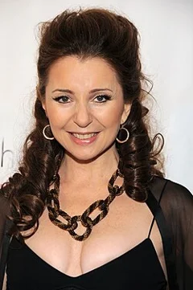

Spider-Man 2 (2004)
| Movie | Release Date | Poster |
|---|---|---|
| Spider-Man 2 PG-13 · 2h 2m · action · thriller · superhero |  |
| Trailer |
|---|
| Rotten Tomatoes | Metacritic | IMDb |
|---|---|---|
| 93% | 83/100 | View on IMDb |
| Overview |
|---|
Spider-Man 2 is a 2004 American superhero film directed by Sam Raimi and written by Alvin Sargent from a story conceived by Michael Chabon and the writing team of Alfred Gough and Miles Millar. Based on the Marvel Comics superhero Spider-Man, it is the second film in Raimi's Spider-Man trilogy (2002–2007), and the sequel to Spider-Man (2002). Tobey Maguire stars as Peter Parker / Spider-Man, alongside Kirsten Dunst, James Franco, Alfred Molina, Rosemary Harris, and Donna Murphy. The plot follows Peter Parker as he tries to manage his job, academics, personal life, and life as Spider-Man while also attempting to stop the scientist Dr. Otto Octavius from re-creating a dangerous experiment. Full plot (spoilers)Peter Parker struggles to balance his personal life with his crime-fighting as Spider-Man. He juggles multiple jobs and faces overdue rent and schoolwork as his aunt May is facing eviction. Daily Bugle editor-in-chief J. Jonah Jameson criticizes Spider-Man in the paper, and Peter's best friend, Harry Osborn , blames Spider-Man for his father Norman Osborn 's death, and resents Peter for not revealing Spider-Man's identity. To protect her, Peter has distanced himself from Mary Jane Watson , despite their mutual romantic feelings. Tired of Peter's secrecy, Mary Jane gets engaged to Jameson's son, John . Now a leader at his father's company, Oscorp , Harry funds the development of a fusion power machine created by nuclear scientist Otto Octavius , who befriends and mentors Peter. During a public demonstration hosted by him and his wife Rosie, Octavius uses a harness with four mechanical tentacles controlled by artificial intelligence to interact with the machine. The fusion reaction destabilizes, threatening mass destruction and killing Rosie, but Octavius refuses to shut it down. The harness becomes fused to his body, and the inhibitor chip restricting the tentacles' AI is destroyed. Octavius is taken to a hospital where doctors prepare to surgically remove the harness, but the tentacles, having gained sapience without the inhibitor chip, kill the crew. Octavius, now under the tentacles' influence, flees to a derelict harbor warehouse, where he plans to rebuild the machine. While robbing a bank to fund his plan, Octavius takes May hostage, but Peter rescues her. Overwhelmed by stress, exhaustion, and the conflict between wanting a normal life and his responsibilities as Spider-Man, Peter's powers begin to fade. He gives up being Spider-Man and embraces civilian life, excelling at university and watching Mary Jane perform in The Importance of Being Earnest . Peter confesses his inadvertent role in Ben's death to May; though initially shocked, she forgives him. Despite his lost powers, Peter saves a child from a burning building, but another person dies. Believing he could have saved them both as Spider-Man, Peter concludes that his responsibilities as Spider-Man outweigh his personal happiness. Octavius completes his new machine and confronts Harry, demanding the rare isotope tritium to power it. Harry agrees in exchange for Octavius bringing him Spider-Man, instructing Octavius to use Peter to find him. Realizing that she does not love John, Mary Jane meets with Peter at a café to confess her feelings, but he lies that he does not reciprocate. Octavius attacks the pair and kidnaps Mary Jane to coerce Peter into finding Spider-Man. Peter's powers fully return, and as Spider-Man, he fights Octavius atop a New York City Subway train. Octavius sabotages the controls of the train before retreating, forcing Peter to use all his strength to stop it from plunging into the New York Harbor . Despite the passengers' efforts to protect him, Octavius captures the weakened Peter and delivers him to Harry. Harry unmasks Spider-Man, discovering Peter's true identity. Peter persuades Harry to help him save Mary Jane, leading him to Octavius's lair. The larger fusion reaction destabilizes again, and Peter unmasks himself to convince Octavius to resist the tentacles' influence and help him. Octavius, acknowledging his folly, sacrifices himself to drown the machine in the bay. Peter rescues Mary Jane, who now knows his secret, and admits that while he loves her, he cannot be with her. Meanwhile, Harry sees a vision in a mirror of Norman demanding vengeance. Harry refuses to hurt Peter and shatters the mirror, revealing a storeroom of Norman's abandoned Green Goblin equipment. On her wedding day, Mary Jane abandons the ceremony and runs to Peter's apartment, telling him her choice to be with him despite the risk. Their kiss is interrupted by police sirens, and Mary Jane encourages him to go help as Spider-Man. |
| Actor | Character | Photo |
|---|---|---|
| Tobey Maguire | Peter Parker / Spider-Man A superhero, Columbia University physics student, and photographer for the Daily Bugle . | No photo |
| Kirsten Dunst | Mary Jane Watson An aspiring Broadway actress and a friend Peter has loved since he was a child, yet he gave up the chance of being with her out of concern for her safety. |  |
| James Franco | Harry Osborn Oscorp 's current Chief executive officer (CEO), Norman Osborn's son and Peter's best friend, who holds his alter-ego Spider-Man responsible for his father's death. |  |
| Alfred Molina | Dr. Otto Octavius / Doctor Octopus A scientist working on behalf of Oscorp and Peter's role model and mentor who goes insane after he fails to create a self-sustaining fusion reaction, which also resulted in the death of his wife, Rosie. |  |
| Rosemary Harris | May Parker Ben Parker 's widow and Peter's paternal aunt. |  |
| Donna Murphy | Rosalie Octavius Otto's wife and assistant. |  |
| J. K. Simmons | J. Jonah Jameson | No photo |
| Daniel Gillies | John Jameson | No photo |
| Dylan Baker | Curt Connors | No photo |
| Bill Nunn | Robbie Robertson | No photo |
| Vanessa Ferlito | – | No photo |
| Elizabeth Banks | Betty Brant | No photo |
| Elya Baskin | – | No photo |
| Mageina Tovah | Ursula Ditkovich | No photo |
| Ted Raimi | Ted Hoffman | No photo |
| Christine Estabrook | – | No photo |
| Bruce Campbell | – | No photo |
| Cliff Robertson | Uncle Ben | No photo |
| Willem Dafoe | Norman Osborn | No photo |
| John Landis | – | No photo |
| Hal Sparks | – | No photo |
| Emily Deschanel | – | No photo |
| Stan Lee | – | No photo |
| Aasif Mandvi | – | No photo |
| Joel McHale | – | No photo |
| Lucy Liu | – | No photo |
| Reed Diamond | – | No photo |
| Daniel Dae Kim | – | No photo |
| Jopaul Van Epp | – | No photo |
| Valery Kukhareshin | Norman Osborn | No photo |
| Vladimir Maslakov | Harry Osborn | No photo |
| Sergey Parshin | Otto Octavius | No photo |
| Yury Lazarev | Curt Connors | No photo |
| Detail | Value |
|---|---|
| Directed by | Sam Raimi |
| Written by | Alvin Sargent, Alfred Gough, Miles Millar, Michael Chabon |
| Produced by | Avi Arad, Laura Ziskin |
| Music by | Danny Elfman |
| Cinematography | Bill Pope |
| Edited by | Bob Murawski |
| Production companies | Columbia Pictures, Marvel Entertainment |
| Distributed by | InterCom, Sony Pictures, Netflix, Disney+, Sony Pictures Motion Picture Group |
| Running time | 122 minutes |
| MPAA rating | PG-13 |
| Budget | $200 million |
| Box office | $789 million |
Overview, plot, and cast descriptions are from Wikipedia (CC BY-SA 4.0). Credits, ratings, and box office are from Wikidata.